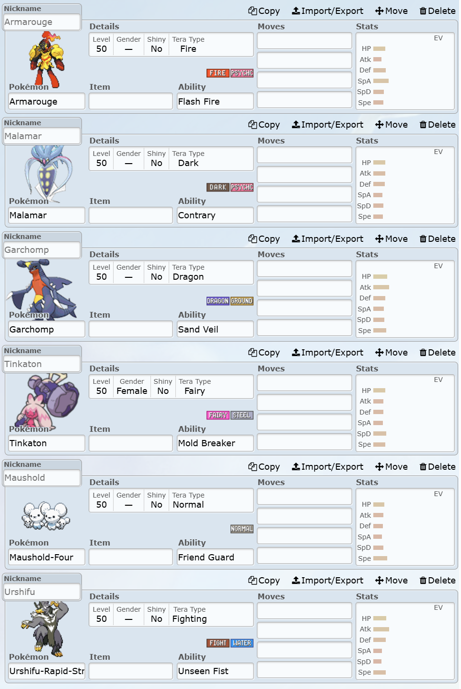

Pokemon Competitive Analysis
HomeProblem Definition
Data science project analyzing competitive Pokemon team compositions using statistical methods and numerical computation. Focused on data pipeline development, API integration, and statistical preprocessing. This analysis represents the data collection and cleaning phase, with numerical computation detailed separately. [[You should probably just combine it all into one page]]
Pokemon competitive battling involves turn-based strategy with extensive team customization options. The core research question addresses competitive meta health:
Hypothesis: Competitive Pokemon meta diversity can be quantified through team composition variance and win-rate analysis.
API Integration and Data Acquisition
Implemented Pokemon Showdown API integration for battle data extraction. Showdown hosts competitive battles with comprehensive match records accessible via [[RESTful API endpoints]]. Data extraction involved JSON parsing and HTTP request management for large-scale dataset compilation.
Applied domain-specific filtering to reduce data complexity and maintain project scope within time constraints. Focus limited to team composition analysis, excluding in-battle decision trees that would require sequential analysis of player actions. This constraint reduced data dimensionality while preserving strategic team-building insights.

Extracted relevant features and implemented structured data storage for subsequent processing pipeline. Raw data contained significant redundancy requiring systematic cleanup procedures.
Data Preprocessing and Normalization [[Or other words like munging or wrangling]]
Implemented data validation by filtering incomplete team compositions. Teams with fewer than six Pokemon were excluded as they represented non-competitive matches or testing scenarios, ensuring dataset quality for meaningful statistical analysis. [[TODO: add "filtered out X% of initial dataset"]]
Developed data transformation pipeline converting Pokemon names to six-dimensional stat vectors. This approach enabled numerical analysis while maintaining team composition characteristics essential for competitive evaluation. Non-quantifiable attributes were excluded to maintain analytical consistency.
Implemented local caching system using PokeAPI for stat data retrieval. Created lookup table to eliminate redundant API calls for frequently-used Pokemon, significantly reducing data acquisition latency. [[TODO: add "reduced API calls by X% through caching optimization"]] Required custom name mapping between Pokemon Showdown and PokeAPI naming conventions due to format inconsistencies. [[I dunno, this whole section should be greatly expanded, it seems like a lot of work was done here. Unless that comment about it all being manual is true; that'd be bad. You need something to talk about during an interview since this part will definitely come up.]]

Applied lookup table transformations to achieve final dataset structure suitable for statistical analysis.
Finalized Data Representation
Final dataset comprised team records represented as six-dimensional vectors (HP, Attack, Defense, Special Attack, Special Defense, Speed) computed as mean values across team members, paired with binary win/loss outcomes. This representation enabled statistical analysis of team composition effectiveness while maintaining computational efficiency.
Collaborative analysis with team partner integrated win/loss metrics into comprehensive meta-health evaluation. Results demonstrated competitive diversity through multiple successful team archetypes rather than single dominant strategy. Individual work continued independently with numerical computation focus detailed in subsequent analysis. [[Making a lot of assumptions. You should definitely have a picture]]
Statistical Analysis Extension
Extended dataset application in numerical computation coursework with refined research objective:
Research Question: How do the stats of a Pokemon team influence it's success?
Visualization Implementation
Generated comprehensive statistical visualization using all pairwise combinations of six stats, producing 18 plots with regression analysis. Implemented cubic spline interpolation via NumPy for smooth curve fitting, separating winning teams (blue) from losing teams (red) to identify performance patterns. [[The image here is impossible to read, both in resolution and results. This appears to undermine the overall analysis efficacy]] [[Stopping the updates here since I don't understand the rest of the results]]
On first inspection, the graphs are clearly messy, and many do not contain notable information. However, there are still plenty of interesting points to analyze. [[Then show it. If your results aren't visible, then it isn't a good visualization. Consider doing a custom visualization for each point you expand on below]]
The graph of HP vs. Attack shows an upward trend with both winning and losing teams. This means that the two stats are correlated, but because this correlation exists regardless of the success of the team it is likely a pattern present in Pokemon designs rather than team designs.
The graph of HP vs. Defense shows more interesting results. Regardless of the defense of the team choosing a high or low HP value results in more success, as shown by the blue line deviating from the red line at the edges of the graph. Specifically, having low HP and low defense indicates an offense-focused team; having low HP and high defense creates a general balance of bulkiness, leaving room for other stats to influence a team's success; and having high HP and high defense makes a bulk-focused team. This begins a pattern present in many of the graphs that shows that having a specialization for a team results in more success than having an "all-rounder" team with no focus.
The graph of Attack vs. Special Attack shows a generally downward trend in winning and losing teams. The inverse correlation here shows that there are practically no Pokemon available to construct a team that has both offensive stats high. Most importantly from this graph is the separation between the two lines at high attack and low special attack. This is another example of choosing a specialization being beneficial compared to having no focus.
The graph of Attack vs. Speed shows no trend, although with two interesting exceptions. At low attack and high speed, successful teams are more prevalent; these might be support-based teams that have less of a need for physical damage output. At moderate attack and low speed, successful teams are similarly more present; these might be "Trick Room" teams that actually benefit from low speed stats. These disconnects from the unsuccessful teams shows that these specializations are again beneficial.
The graph of Special Attack vs. Speed shows a significant separation between the winning and losing teams. The important feature present throughout this graph is that low speed paired with any amount of special attack is successful, compared to the more general stat distributions seen in red. This is likely due to many slow, specially-focused Pokemon receiving more support options than similar Pokemon with physical focuses.
Conclusion
The most important part of the conclusion is that the initial question seems to be useless for analyzing the data. In reality, there is no single stat that makes a significant difference in the success of teams. Rather, a specialization or focus in any stat results in more success compared to a team with fully average stats.
Additionally, the data analysis of this project was slightly limited by the tools available in the classes that these projects were based around. I believe that there are more options available to me outside of the classes that would enable me to make clearer conclusions about the data. These options might range from simple scatter plots to training various models with different types of artificial intelligence to identify patterns automatically.